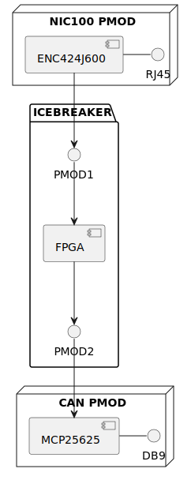
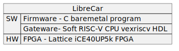
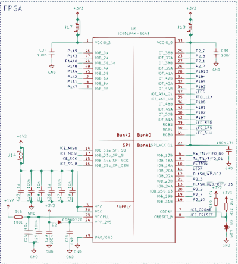
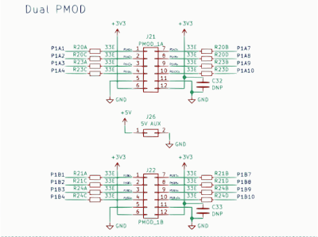
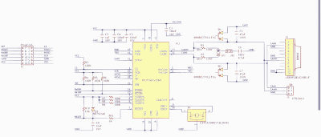
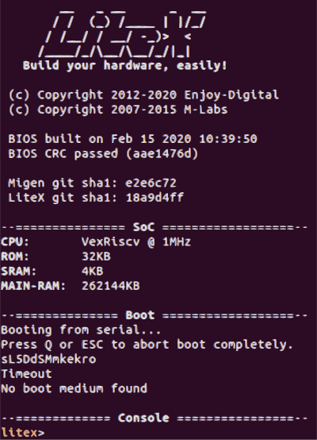

Introduction
The ECU is a microprocessor-based system that receives input from various sensors, analyzes the data, and controls various driving functions based on the input. LibreCar is a small and affordable Engine Control Unit (ECU), an electronic control module that manages control of an automotive vehicle.
LibreCar comprises of: * opensource hardware - Opensource softcore of RISC-V - Digital peripheral IPs for CAN and Ethernet * opensource software - Device drivers for CAN and Ethernet - Middleware based on AUTOSAR specification for Automotive protocols
LibreCar embodies both CAN Bus (Controller Area Network) or over Automotive Ethernet Bus, a switched network used in the automotive field to enable supporting modern automotive protocol like * DoIP ( Diagnostics over Internet Protocol ) * DLT ( Diagnostics Log and Trace ) * XCP (Universal Measurement and Calibration Protocol )
Target Group
Its modularity and versatility make it suitable for anyone in the below group :
-
Automotive manufacturers/suppliers: To develop Automotive functions like Diagnostics over an opensource HW where they can tweak it to better suite their product needs and are no longer tied to ASIC offering from semiconductor manufacturers.
-
Researchers: To study current security and bandwidth limitations of modern automotive vehicles and come up with new approach to solve them.
-
Makers/Hobbyists: To learn how to make new products in automotive ecosystem and develop interesting Hardware and Software around it in opensource community
-
Educators/students: To understand the current working of automotive ECU and its working principles.
Overview
Libre Car Control allows developers to:
- Implement a simple service over Ethernet
- Convert this service to signal in Hardware
- Use this signal in control bus of vehicle CAN network
Product Objectives
- Read control messages from the Vehicle’s CAN Bus via Ethernet network
- Send control commands to the Vehicle’s CAN Bus via Ethernet network
Control commands can be published to control bus in the form of Ethernet packet with pub/sub model from a node executing a path planning algorithm.
System Architecture

Components
The main components of system architecture are broken down in Software and Hardware.

Hardware
iCE40 FPGA chip has severfal Pmod interface (peripheral module interface) for connecting peripheral modules.

Pmod CAN and Pmod NIC100 are directly connected to FPGA via this interface :

CAN
Pmod CAN is a CAN 2.0B controller with an integrated transceiver. The embedded Microchip MCP25625 chip connects directly to the physical CAN Bus.

Ethernet
The PmodNIC100 utilizes Microchip’s ENC424J600 to provide both MAC and PHY support to enable Ethernet functionality at data rates up to 10 Mbit/s.

Gateware
We use Litex framework to program VexRiscv-SMP CPU Risc-V SOC on the iCEBreaker FPGA that can be programmed from C language.

Firmware
C language based device driver is used to program SPI interface that connects to CAN bus via MCP25625 and Ehternet via ENC424J600.
Application
Service to signal conversion layer is written to trasmit Ethernet based SOMEIP prototocol to CAN based signals.
Interface
Diagnostic Interface
The user has On-Board Diagnostics version 2 (OBD-II) as an interface to the Diagnosis Bus of the LibreCar ECU. Below steps are used to send a signal:
-
Establish a connection: First, you need to establish a connection between the LibreCar OBD-II module and the diagnostic tool. This can be done using a wired or wireless connection. For example, you can connect the LibreCar OBD-II module to a Wi-Fi access point and use a diagnostic tool connected to the same network to communicate with it.
-
Set up LibreCar OBD-II module: Once the connection is established, you need to configure the LibreCar OBD-II module to communicate over IP. This can be done by setting the IP address and other network parameters.
-
Identify the OBD-II commands: The OBD-II standard defines a set of commands that can be used to communicate with the different ECUs in the vehicle. You need to identify the OBD-II commands that are relevant to the diagnostic data you are trying to retrieve.
-
Send the OBD-II commands over IP: Once you have identified the relevant OBD-II commands, you can send them over IP to the OBD-II device. You can use a diagnostic tool or a custom application to send the OBD-II commands.
-
Receive the response: Once the OBD-II commands are sent, LibreCar OBD-II module will respond with the diagnostic data in the form of a response message. You can then parse the response message to extract the diagnostic data you need.
REST API Interface
The user also has REST APIs availble over http to directly talk to services in the LibreCar ECU:
Core APIs
- HelloWorldPublisher - Publish a message from a node to the Vehicle bus.
- HelloWorldSubscriber - Subscribe a node to messages on the Vehicle bus.
- Publish & Subscribe - Use publish/subscribe routines.
- Sample Application - Create an application node.
Device APIs
- Ethernet Reader - Read data from a network device.
- Ethernet Writer - Write data to a network device.
- CAN Reader - Read data from a CAN device.
- CAN Writer - Write data to a CAN device.
WORK BREAKDOWN STRUCTURE
A work breakdown structure has been created to identify and correctly estimate the time and cost of each possible task in the proposal. Most of task do depend on the progress of each other so they need to be executed in a serial Top-Down approach.
Task Duration
To estimate the time of each task, the beta distribution formula was used, shown below. This formula allows to base the estimated time more on the average time a task may require, giving a more accurate estimation of the time needed to finish a task.
𝐸𝑠𝑡𝑖𝑚𝑎𝑡𝑒𝑑 𝑡𝑖𝑚𝑒 = (𝑜𝑝𝑡𝑖𝑚𝑖𝑠𝑡𝑖𝑐 𝑡𝑖𝑚𝑒 + 4 ∗ 𝑎𝑣𝑒𝑟𝑎𝑔𝑒 𝑡𝑖𝑚𝑒 + 𝑝𝑒𝑠𝑠𝑖𝑚𝑖𝑠𝑡𝑖𝑐 𝑡𝑖𝑚𝑒) / 6
Each task completion is considered as a Major or Minor Milestone to help us break down the overall Project duration into smaller sprints which reduces the chance of the task falling into overtime, as well as speeding up the possible completion time.
Milestones :
The milestones for this project have been set in a chronological order, with independent, parallelizable tasks being set at the start, and interdependent tasks being arranged in a serial order and can be done one after the other.
-
Develop the hardware:
- Task: Create an opensource gateware which comprises of softcore RISC-V and peripherals like CAN and Ethernet
- Acceptance Criteria: Gateware can be compiled and booted up on a FPGA development board.
- Duration: 80 hours
-
Develop the firmware:
- Task: Create opensource firmware which comprises of kernel and device drivers to bring up RISC-V soft core and peripherals like CAN and Ethernet.
- Acceptance Criteria: FPGA runs a RISC-V softcore with CAN bus and Ethernet bus communication working.
- Duration: 80 hours
-
Develop the middleware:
- Task: Once the hardware and firmware development are complete, the next step is to build the middleware which can support automotive protocols like Diagnostics, Log&Trace and Measuement&Calibration based on Autosar(AUTomotive Open System ARchitecture) specification.
- Acceptance Criteria: Below Automotive protocols are up to make it function like a modern automotive ECU:
- DoIP ( Diagnostics over Internet Protocol )
- DLT ( Diagnostics Log and Trace )
- XCP (Universal Measurement and Calibration Protocol )
- Duration: 80 hours
-
Manufacturing:
- Task: After the prototype has been tested on a development FPGA board as working, the final product can be manufactured. This involves designing and producing the few PCBs available for evaluation by interested end users.
- Acceptance Criteria:
- Custom PCB is available with Diagnostic Interface for end user to use the LibreCar ECU.
- Documentation is available to end user how to use the LibreCar ECU with firmware, gateware and PCB design files all available as opensource.
- Duration: 80 hours